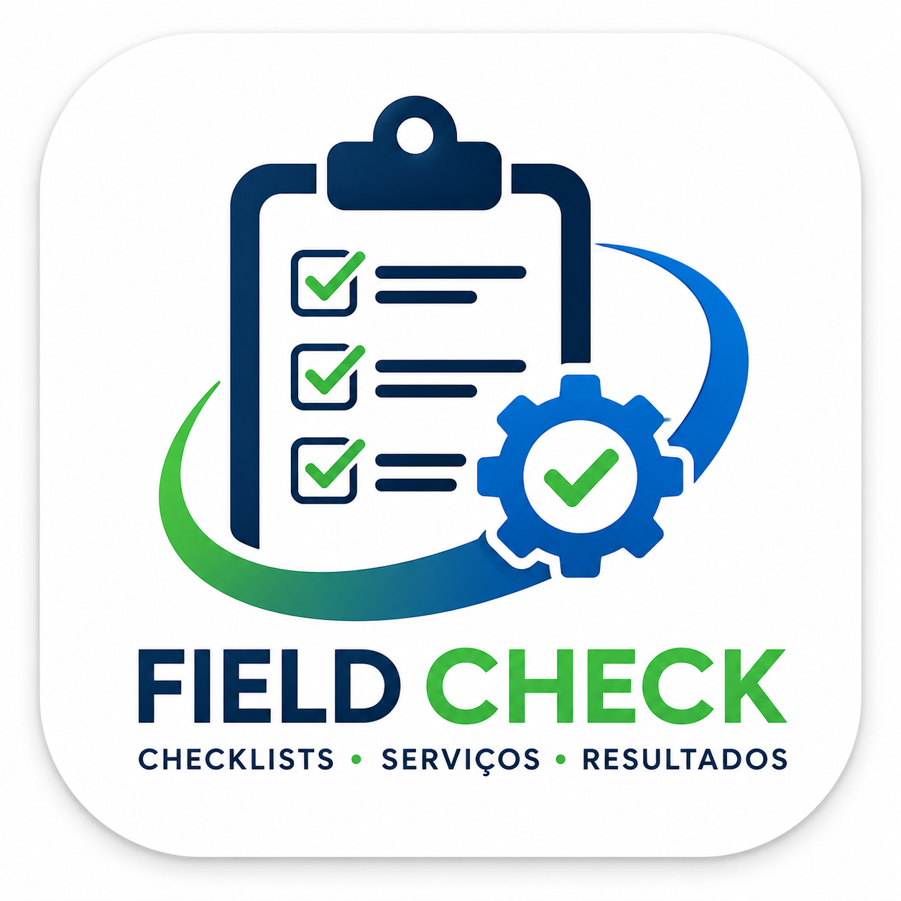
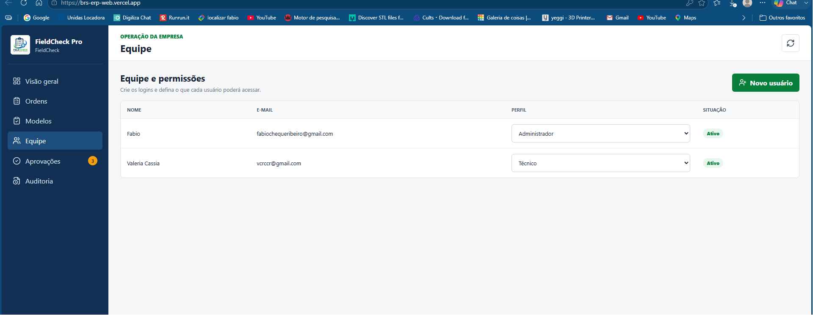
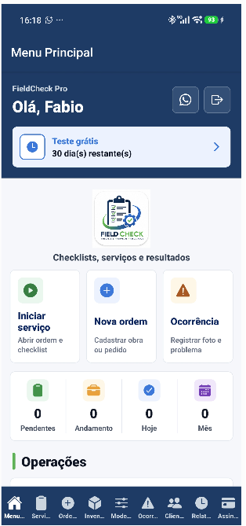
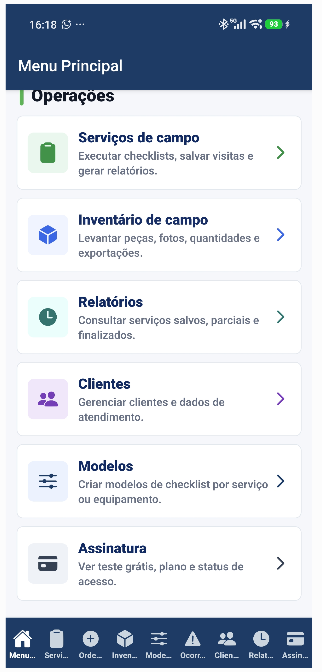
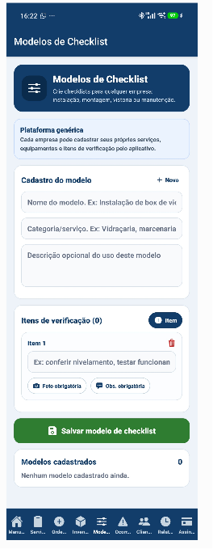
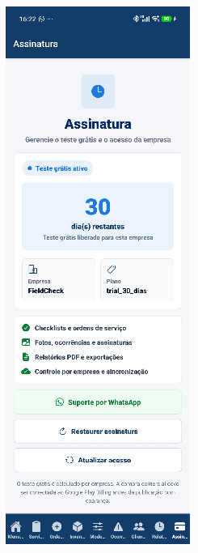
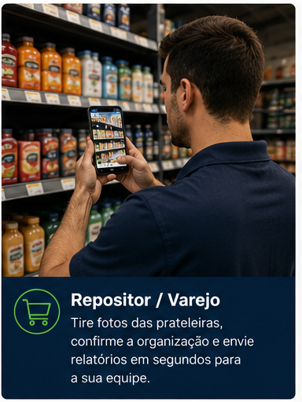
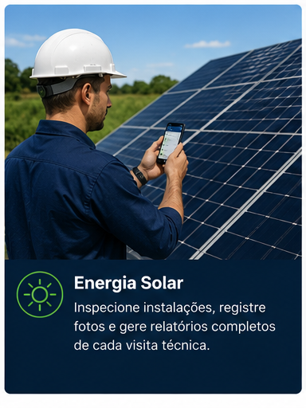

Padronize o que deve ser checado
Crie modelos de checklist por TAG, equipamento ou processo. Quando o cliente usar a mesma TAG, o sistema puxa os itens automaticamente.

FieldCheck Pro Solicitar demoO FieldCheck Pro transforma ordens de serviço, inspeções, checklist, ocorrências e inventário em um processo digital simples para o técnico e visual para o gestor.
O aplicativo resolve a rotina do técnico em campo. O portal entrega controle, padronização e visão gerencial para a empresa.
Crie modelos de checklist por TAG, equipamento ou processo. Quando o cliente usar a mesma TAG, o sistema puxa os itens automaticamente.
A empresa cadastra ordens, usuários, modelos e permissões. O técnico executa apenas o que foi liberado para ele.
Fotos, observações, assinatura, geolocalização, ocorrências, inventário e histórico ficam organizados por pedido e cliente.
Dashboard com pedidos em aberto, visitas, aprovações, não conformidades, clientes críticos e itens mais verificados.
Use o portal para controlar cadastros, equipes, modelos, ordens, aprovações e auditoria. Use o app para executar em campo com poucos toques.


O portal foi pensado para quem precisa administrar a operação sem abrir várias planilhas ou depender de mensagens soltas.
Pedidos por cliente, status, visitas, aprovações, itens mais verificados e alertas de não conformidade.
Crie técnicos, supervisores e administradores, definindo o que cada perfil pode acessar.
Padronize os itens checados por tipo de equipamento, como JAN para janelas ou BOM para bombas.
Relatórios enviados pelo campo podem ser aprovados, reabertos e auditados pelo gestor.



O técnico recebe a ordem, inicia o serviço, preenche o checklist, registra fotos, ocorrências e assinatura. A empresa acompanha o retorno pelo portal.
O FieldCheck Pro foi estruturado para crescer como plataforma multiempresa, com módulos habilitados por cliente e planos flexíveis.
Ordens, checklist, aceite do cliente, assinatura e PDF.
Rotinas programadas, histórico e controle por equipamento.
Falhas, peças, solução aplicada e não conformidades.
Inspeções internas, evidências, aprovação e rastreabilidade.
Checklists de EPI, conformidade, fotos e relatórios.
Vistorias técnicas, laudos e acompanhamento por status.
Levantamento de peças, quantidades, fotos e exportação.
Campos e processos adaptados para cada operação.
Super Admin cria empresas, planos, módulos e status.
Admin cria usuários, TAGs, checklists e ordens.
O app coleta fotos, respostas, observações e assinatura.
Portal mostra dashboards, relatórios, ocorrências e pendências.

Repositor de lojaFotos, presença, gôndolas e execução no PDV.
Energia solarInstalação, checklist, laudo e pós-venda.Cada módulo do FieldCheck Pro agora possui uma página própria, preparada para SEO, campanhas e apresentação comercial.
Um único portal para todos os clientes, com dados separados por empresa_id, RLS no Supabase, perfis de acesso e módulos contratados por empresa.
Os valores podem ser ajustados conforme número de usuários, módulos contratados e volume de operação.
Ideal para provar o valor com uma empresa antes da assinatura.
Para empresas que precisam controlar equipe, clientes, checklists, visitas e dashboards.
Para operações maiores, com múltiplas áreas, supervisores, integrações e personalização.
Respostas rápidas para empresas que querem digitalizar checklists, inspeções, auditorias e serviços externos.
É uma plataforma SaaS com aplicativo e portal web para gerenciar checklists digitais, ordens de serviço, visitas técnicas, fotos, assinaturas, relatórios PDF e indicadores de equipes em campo.
Entrega técnica, manutenção preventiva, manutenção corretiva, auditorias, segurança do trabalho, inspeções, inventário e formulários personalizados por empresa.
Sim. O FieldCheck Pro gera relatórios com dados do cliente, respostas do checklist, fotos, observações, assinatura e evidências da execução.
Sim. A plataforma foi pensada para operação multiempresa, com usuários, permissões, modelos, módulos e dados separados para cada cliente.
Basta chamar pelo WhatsApp ou enviar e-mail pelo formulário de contato do site para agendar uma apresentação do app e do portal.
Solicite uma demonstração e veja como o app pode ser configurado para entrega técnica, manutenção, auditoria, inspeções, inventário e formulários personalizados.